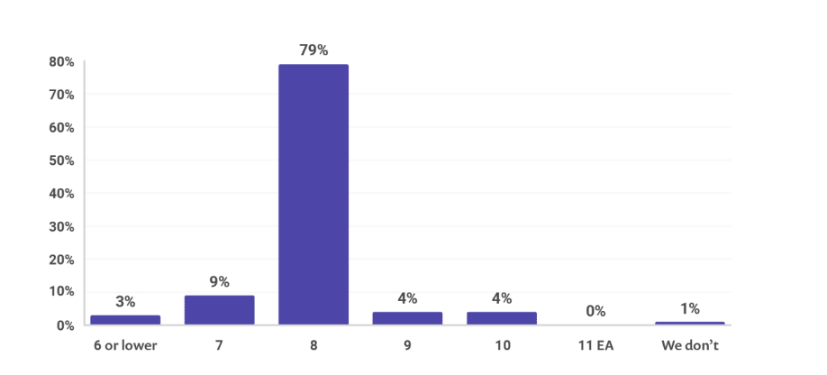

- 00 开篇词：JVM，一块难啃的骨头.md.html
- 01 一探究竟：为什么需要 JVM？它处在什么位置？.md.html
- 02 大厂面试题：你不得不掌握的 JVM 内存管理.md.html
- 03 大厂面试题：从覆盖 JDK 的类开始掌握类的加载机制.md.html
- 04 动手实践：从栈帧看字节码是如何在 JVM 中进行流转的.md.html
- 05 大厂面试题：得心应手应对 OOM 的疑难杂症.md.html
- 06 深入剖析：垃圾回收你真的了解吗？（上）.md.html
- 07 深入剖析：垃圾回收你真的了解吗？（下）.md.html
- 08 大厂面试题：有了 G1 还需要其他垃圾回收器吗？.md.html
- 09 案例实战：亿级流量高并发下如何进行估算和调优.md.html
- 10 第09讲：案例实战：面对突如其来的 GC 问题如何下手解决.md.html
- 11 第10讲：动手实践：自己模拟 JVM 内存溢出场景.md.html
- 12 第11讲：动手实践：遇到问题不要慌，轻松搞定内存泄漏.md.html
- 13 工具进阶：如何利用 MAT 找到问题发生的根本原因.md.html
- 14 动手实践：让面试官刮目相看的堆外内存排查.md.html
- 15 预警与解决：深入浅出 GC 监控与调优.md.html
- 16 案例分析：一个高死亡率的报表系统的优化之路.md.html
- 17 案例分析：分库分表后，我的应用崩溃了.md.html
- 18 动手实践：从字节码看方法调用的底层实现.md.html
- 19 大厂面试题：不要搞混 JMM 与 JVM.md.html
- 20 动手实践：从字节码看并发编程的底层实现.md.html
- 21 动手实践：不为人熟知的字节码指令.md.html
- 22 深入剖析：如何使用 Java Agent 技术对字节码进行修改.md.html
- 23 动手实践：JIT 参数配置如何影响程序运行？.md.html
- 24 案例分析：大型项目如何进行性能瓶颈调优？.md.html
- 25 未来：JVM 的历史与展望.md.html
- 26 福利：常见 JVM 面试题补充.md.html
- 捐赠
25 未来：JVM 的历史与展望
本课时我们主要讲解 JVM 的历史与展望。
我们都知道，Java 目前被 Oracle 控制，它是从 Sun 公司手中收购的，HotSpot 最初也并非由 Sun 公司开发，是由一家名为 Longview Technologies 的小公司设计的，而且这款虚拟机一开始也不是为 Java 语言开发的。
当时的 HotSpot，非常优秀，尤其是在 JIT 编译技术上，有一些超前的理念，于是 Sun 公司在 1997 年收购了 Longview Technologies，揽美人入怀。
Sun 公司是一家对技术非常专情的公司，他们对 Java 语言进行了发扬光大，尤其是在 JVM 上，做了一些非常大胆的尝试和改进。
9 年后，Sun 公司在 2006 年的 JavaOne 大会上，将 Java 语言开源，并在 GPL 协议下公开源码，在此基础上建立了 OpenJDK。你应该听说过，GPL 协议的限制，是比较宽松的，这极大的促进了 Java 的发展，同时推动了 JVM 的发展。
Sun 是一家非常有技术情怀的公司，最高市值曾超过 2000 亿美元。但是，最后却以 74 亿美元的价格被 Oracle 收购了，让人感叹不已。
2010 年，HotSpot 进入了 Oracle 时代，这也是现在为什么要到 Oracle 官网上下载 J2SE 的原因。
幸运的是，我们有 OpenJDK 这个凝聚了众多开源开发者心血的分支。从目前的情况来看，OpenJDK 与 Oracle 版本之间的差别越来越小，甚至一些超前的实验性特性，也会在 OpenJDK 上进行开发。
对于我们使用者来说，这个差别并不大，因为 JVM 已经屏蔽了操作系统上的差异，而我们打交道的，是上层的 JRE 和 JDK。
其他虚拟机
由于 JVM 就是个规范，所以实现的方法也很多，完整的列表请点击这里查看。
JVM 的版本非常之多，比较牛的公司都搞了自己的 JVM，但当时谁也没想到，话语权竟会到了 Oracle 手里。下面举几个典型的例子。
J9 VM
我在早些年工作的时候，有钱的公司喜欢买大型机，比如会买 WebLogic、WebSphere 等服务器。对于你现在已经用惯了 Tomcat、Undertow 这些轻量级的 Web 服务器来说，这是一些很古老的名词了。
WebSphere 就是这样一个以“巨无霸”的形式存在，当年的中间件指的就是它，和现在的中间件完全不是一个概念。
WebSphere 是 IBM 的产品，开发语言是 Java。但是它运行时的 JVM，却是一个叫做 J9 的虚拟机，依稀记得当年，有非常多的 jar 包，由于引用了一些非常偏门的 API，却不能运行（现在应该好了很多）。
Zing VM
Zing JVM 是 Azul 公司传统风格的产品，它在 HotSpot 上做了不少的定制及优化，主打低延迟、高实时服务器端 JDK 市场。它代表了一类商业化的定制，比如 JRockit，都比较贵。
IKVM
这个以前在写一些游戏的时候，使用过 LibGDX，相当于使用了 Java，最后却能跑在 .net 环境上，使用的方式是 IKVM 。它包含了一个使用 .net 语言实现的 Java 虚拟机，配合 Mono 能够完成 Java 和 .net 的交互，让人认识到语言之间的鸿沟是那么的渺小。
Dalvik
Android 的 JVM，就是让 Google 吃官司的那个，从现在 Android 的流行度上也能看出来，Dalvik 优化的很好。
历史
下面我简单讲讲 Java 的发展历史：
- 1995 年 5 月 23 日，Sun 公司正式发布了 Java 语言和 HotJava 浏览器；
- 1996 年 1 月，Sun 公司发布了 Java 的第一个开发工具包（JDK 1.0）；
- 1996 年 4 月，10 个最主要的操作系统供应商申明将在其产品中嵌入 Java 技术，发展可真是迅雷不及掩耳；
- 1996 年 9 月，约 8.3 万个网页应用了 Java 技术来制作，这就是早年的互联网，即 Java Applet，真香；
- 1996 年 10 月，Sun 公司发布了 Java 平台第一个即时编译器（JIT），这一年很不平凡；
- 1997 年 2 月 18 日，JDK 1.1 面世，在随后的三周时间里，达到了 22 万次的下载量，PHP 甘拜下风；
- 1999 年 6 月，Sun 公司发布了第二代 Java 三大版本，即 J2SE、J2ME、J2EE，随之 Java2 版本发布；
- 2000 年 5 月 8 日，JDK 1.3 发布，四年升三版，不算过分哈；
- 2000 年 5 月 29 日，JDK 1.4 发布，获得 Apple 公司 Mac OS 的工业标准支持；
- 2001 年 9 月 24 日，Java EE 1.3 发布，注意是 EE，从此开始臃肿无比；
- 2002 年 2 月 26 日，J2SE 1.4 发布，自此 Java 的计算能力有了大幅度的提升，与 J2SE 1.3 相比，多了近 62% 的类与接口；
- 2004 年 9 月 30 日 18:00PM，J2SE 1.5 发布，1.5 正式更名为 Java SE 5.0；
- 2005 年 6 月，在 JavaOne 大会上，Sun 公司发布了 Java SE 6；
- 2009 年 4 月 20 日，Oracle 宣布收购 Sun，该交易的总价值约为 74 亿美元；
- 2010 年 Java 编程语言的创始人 James Gosling 从 Oracle 公司辞职，一朝天子一朝臣，国外也不例外；
- 2011 年 7 月 28 日，Oracle 公司终于发布了 Java 7，这次版本升级经过了将近 5 年时间；
- 2014 年 3 月 18 日，Oracle 公司发布了 Java 8，这次版本升级为 Java 带来了全新的 Lambda 表达式。
小碎步越来越快，担心很快 2 位数都装不下 Java 的版本号了。目前 Java 的版本已经更新到 14 了，但市场主流使用的还是 JDK 8 版本。
最近更新
有些我们现在认为理所当然的功能，在 Java 的早期版本是没有的。我们从 Java 7 说起，以下内容仅供参考，详细列表见 openjdk JEP 列表。
Java 7
Java 7 增加了以下新特性：
- try、catch 能够捕获多个异常
- 新增 try-with-resources 语法
- JSR341 脚本语言新规范
- JSR203 更多的 NIO 相关函数
- JSR292，第 17 课时提到的 InvokeDynamic
- 支持 JDBC 4.1 规范
- 文件操作的 Path 接口、DirectoryStream、Files、WatchService
- jcmd 命令
- 多线程 fork/join 框架
- Java Mission Control
Java 8
Java 8 也是一个重要的版本，在语法层面上有更大的改动，支持 Lamda 表达式，影响堪比 Java 5 的泛型支持：
- 支持 Lamda 表达式
- 支持集合的 stream 操作
- 提升了 HashMaps 的性能（红黑树）
- 提供了一系列线程安全的日期处理类
- 完全去掉了 Perm 区
Java 9
Java 9 增加了以下新特性：
- JSR376 Java 平台模块系统
- JEP261 模块系统
- jlink 精简 JDK 大小
- G1 成为默认垃圾回收器
- CMS 垃圾回收器进入废弃倒计时
- GC Log 参数完全改变，且不兼容
- JEP110 支持 HTTP2，同时改进 HttpClient 的 API，支持异步模式
- jshell 支持类似于 Python 的交互式模式
Java 10
Java 10 增加了以下新特性：
- JEP304 垃圾回收器接口代码进行整改
- JEP307 G1 在 FullGC 时采用并行收集方式
- JEP313 移除 javah 命令
- JEP317 重磅 JIT 编译器 Graal 进入实验阶段
Java 11
Java 11 增加了以下新特性：
- JEP318 引入了 Epsilon 垃圾回收器，这个回收器什么都不干，适合短期任务
- JEP320 移除了 JavaEE 和 CORBA Modules，应该要走轻量级路线
- Flight Recorder 功能，类似 JMC 工具里的功能
- JEP321 内置 httpclient 功能，java.net.http 包
- JEP323 允许 lambda 表达式使用 var 变量
- 废弃了 -XX+AggressiveOpts 选项
- 引入了 ZGC，依然是实验性质
Java 12
Java 12 增加了以下新特性：
- JEP189 先加入 ShenandoahGC
- JEP325 switch 可以使用表达式
- JEP344 优化 G1 达成预定目标
- 优化 ZGC
Java 13
Java 13 增加了以下新特性：
- JEP354 yield 替代 break
- JEP355 加入了 Text Blocks，类似 Python 的多行文本
- ZGC 的最大 heap 大小增大到 16TB
- 废弃 rmic Tool 并准备移除
Java 14
Java 14 增加了以下新特性：
- JEP343 打包工具引入
- JEP345 实现了 NUMA-aware 的内存分配，以提升 G1 在大型机器上的性能
- JEP359 引入了 preview 版本的 record 类型，可用于替换 lombok 的部分功能
- JEP364 之前的 ZGC 只能在 Linux 上使用，现在 Mac 和 Windows 上也能使用 ZGC 了
- JEP363 正式移除 CMS，我们课程里提到的一些优化参数，在 14 版本普及之后，将不复存在
OpenJDK 64-Bit Server VM warning: Ignoring option UseConcMarkSweepGC; support was removed in 14.0
现状
先看一下 2019 年 JVM 生态系统报告部分图示，部分图示参考了 snyk 这个网站。
生产环境中，主要用哪些 JDK
可以看到 OracleJDK 和 OpenJDK 几乎统治了江湖，如果没有 IBM 那些捆绑销售的产品，份额只会更高。另外，使用 OpenJDK 的越来越多，差异也越来越小，在公有云、私有云等方面的竞争格局，深刻影响着在 OpenJDK 上的竞争格局；OpenJDK 很有可能被认为是一种退⽽求其次的选择。

生产环境中，用哪个版本的 Java
以 8 版本为主，当然还有 6 版本以下的，尝鲜的并不是很多，因为服务器环境的稳定性最重要。新版本升级在中国的宣传还是不够，如果很多企业看不到技术升级的红利，势必也会影响升级的积极性。

应用程序的主要 JVM 语言是什么
很多人反应 Kotlin 非常好用，我尝试着推广了一下，被喜欢 Groovy 的朋友鄙视了一番，目前还是以 Java 居多。

展望
有点规模的互联网公司，行事都会有些谨慎，虽然 JVM 做到了向下版本的兼容，但是有些性能问题还是不容忽视，尝鲜吃螃蟹的并不是很多。
现在用的最多的，就是 Java 8 版本。如果你的服务器用的这个，那么用的最多的垃圾回收器就是 CMS，或者 G1。随着 ZGC 越来越稳定，CMS 终将会成为过去式。
目前，最先进的垃圾回收器，叫做 ZGC，它有 3 个 flag：
- 支持 TB 级堆内存（最大 4T）
- 最大 GC 停顿 10ms
- 对吞吐量影响最大，不超过 15%
每一个版本的发布，Java 都会对以下进行改进：
- 优化垃圾回收器，减少停顿，提高吞吐
- 语言语法层面的升级，这部分在最近的版本里最为明显
- 结构调整，减少运行环境的大小，模块化
- 废弃掉一些承诺要废弃的模块
那么 JVM 将向何处发展呢？以目前来看，比较先进的技术，就是刚才提到的垃圾回收阶段的 ZGC ，能够显著的减少 STW 的问题；另外， GraalVM 是 Oracle 创建的一个研究项目，目标是完全替换 HotSpot，它是一个高性能的 JIT 编译器，接受 JVM 字节码，并生成机器代码。未来，会有更多的开发语言运行在 JVM 上，比如 Python、Ruby 等。
Poject Loom 致力于在 JVM 层面，给予 Java 协程 （fibers）的功能，Java 程序的并发性能会上一个档次。
Java 版本大部分是向下兼容的，能够做到这个兼容，是非常不容易的。但 Java 的特性越加越多，如果开发人员不能进行平滑的升级，会是一个非常严重的问题，JVM 也将会在这里花费非常大的精力。
那 JVM 将聚焦在哪些方面呢？又有哪些挑战？我大体总结了几点：
- 内存管理依然是非常大的挑战，未来会有更厉害的垃圾回收器来支持更大的堆空间
- 多线程和协程，未来会加大对多核的利用，以及对轻量级线程的支持
- 性能，增加整个 JVM 的执行效率，这通常是多个模块协作的结果
- 对象管理和追踪，复杂的对象，有着复杂的生命周期，加上难以预料的内存申请方式，需要更精准的管理优化
- 可预测性及易用性，更少的优化参数，更高的性能
- 更多 JVM 监控工具，提供对 JVM 全方面的监控，跟踪对象，在线优化
- 多语言支持，支持除了 Java 语言之外的其他开发语言，能够运行在 JVM 上
总结
Java 9 之后，已经进入了快速发布阶段，大约每半年发布一次，Java 8 和 Java 11 是目前支持的 LTS 版本，它的功能变动也越来越多、越来越快。让我们把握好 Java 发展的脉搏，一起加油吧。
© 2019 - 2023 Liangliang Lee. Powered by gin and hexo-theme-book.